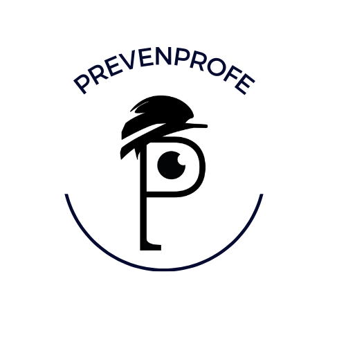

TEMPE
Tecnología como Mediador del Potencial Emprendedor: un marco para equilibrar habilidades blandas, competencias digitales y conocimientos empresariales.
Investigación aplicadaFormación ProfesionalEmprendimiento

PREVENPROFERecursos para IPE, prevención de riesgos laborales, empleabilidad y emprendimiento; proyectos desarrollados con alumnado y transferencia entre aula, empresa y universidad.
El trabajo de PrevenProfe integra tecnología educativa, potencial emprendedor, empleabilidad y metodologías activas en Formación Profesional.
Consultar ORCIDTecnología como Mediador del Potencial Emprendedor: un marco para equilibrar habilidades blandas, competencias digitales y conocimientos empresariales.
Un pódcast creado con estudiantes para entrevistar, reflexionar y aprender de experiencias reales de emprendimiento y empleo.
Ir a iVooxEl acceso se realiza en Google Classroom. Google verifica la cuenta y solo permite entrar al alumnado matriculado en cada clase.